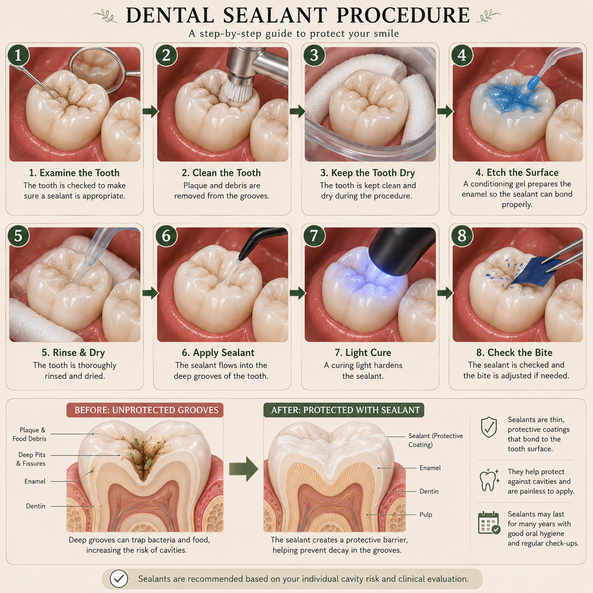

Dental sealants are a preventive treatment designed to help protect certain teeth from developing cavities. They are particularly useful on the grooves and pits of back teeth, where food and plaque can sometimes collect.

Dental sealants are thin protective coatings placed over the grooves and pits of certain teeth. They create a smoother surface that can make these areas easier to keep clean.
Sealants are most commonly placed on the chewing surfaces of back teeth because these teeth often have natural grooves where plaque and food particles can accumulate.
It covers vulnerable grooves on suitable teeth and helps make those areas less likely to trap plaque and food.
Some teeth have deep or narrow grooves that can be difficult to clean thoroughly with a toothbrush. These areas may be more susceptible to cavities.
A sealant can act as a protective barrier over these surfaces and may help reduce the risk of decay in suitable teeth.
Sealants cover deep pits and grooves where plaque and food may collect.
They can reduce the risk of cavities developing on suitable chewing surfaces.
Sealants can be part of a broader strategy for maintaining good oral health.
Good brushing, cleaning between the teeth, a balanced diet and regular dental examinations remain important even after sealants are placed.
Sealants are often considered for children and teenagers when permanent back teeth erupt, but adults may also benefit from them in appropriate situations.
Whether a sealant is useful depends on factors such as the shape of the tooth grooves, cavity risk, oral hygiene and the condition of the tooth.
Sealant placement is generally a straightforward preventive procedure. The tooth must first be clean and appropriately prepared.
The tooth is cleaned carefully to remove plaque and debris from the grooves.
The tooth surface is prepared so that the sealant can bond properly.
The sealant material is carefully flowed into the grooves and pits of the tooth.
A dental curing light may be used to harden the sealant material.
Your dentist checks the sealant and makes sure the bite feels comfortable.
Sealant placement is generally comfortable and does not normally require drilling into healthy tooth structure simply to place the sealant.
Your dentist will explain the procedure and let you know what to expect before treatment.
In most cases, normal oral hygiene can continue after sealant placement. Your dentist may check the sealants during regular dental visits to make sure they remain intact.
Sealants can wear down, chip or become damaged over time. If this happens, your dentist can assess whether repair or replacement is appropriate.
A sealant that has worn away or become damaged may no longer provide the intended protection, so regular dental examinations remain important.
Dental sealants are one part of preventive dental care. Cavities can still develop on other parts of a tooth or around areas that are not covered by the sealant.
Regular brushing, cleaning between the teeth, appropriate fluoride use, healthy habits and routine dental check-ups remain important for maintaining oral health.
No. Sealants are commonly used in children and teenagers, but adults may also benefit when particular teeth have grooves that are susceptible to decay.
No. Sealants are an additional preventive measure. Brushing, cleaning between the teeth, appropriate fluoride use and regular dental care remain important.
Sealants can remain useful for years, but they can wear down or become damaged. Your dentist can check them during regular examinations and decide whether maintenance is needed.
Yes. Sealants reduce the risk of decay on the surfaces they cover, but they do not make a tooth completely immune to cavities.
No. Sealants are primarily preventive and are placed over suitable grooves and pits. Fillings are used to restore tooth structure affected by decay or other damage.
Sealants can be a useful preventive treatment for selected teeth, particularly when deep grooves make cleaning difficult or the risk of decay is increased.
Your dentist can examine the teeth and determine whether sealants would provide meaningful protection based on your individual oral health and cavity risk.
Sealants are one tool dentists can use to protect susceptible teeth, but they work best alongside consistent daily oral hygiene and regular dental care.
If you want to understand whether sealants may be useful for you or your child, you can submit your general dental question through the website.
Ask Dr. Anushka →The information on this page is for general educational purposes only and does not replace an in-person dental examination, diagnosis or personalised professional advice.